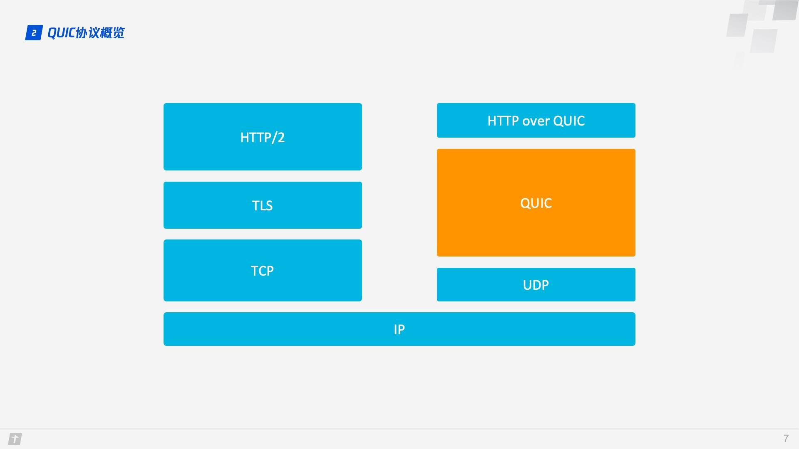
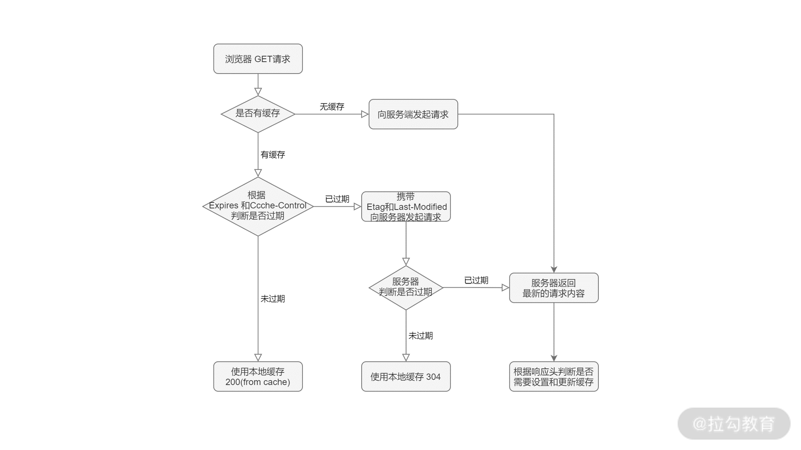
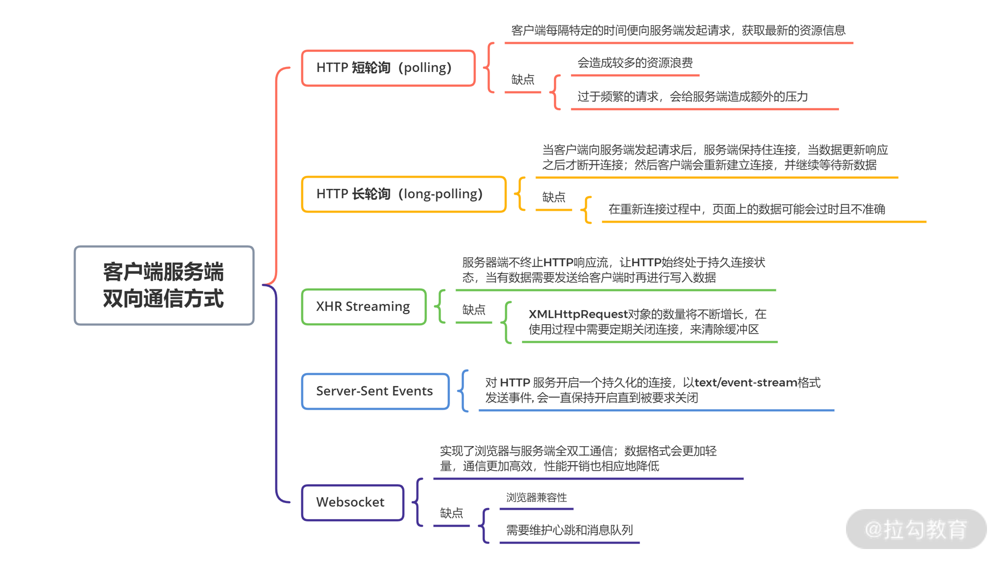

什么是 RESTful 接口
RESTful 不是一种协议，而是一种接口设计风格，其要点如下：
- URL 只有名词
- 看 URL 就知道是什么业务
- 看 method 就知道是什么操作
1 | GET /orders/1234 // 查询订单 |
HTTP 状态码含义
信息响应(100–199)
成功响应(200–299)
- 200 OK
重定向(300–399)
- 301 Moved Permanently（永久重定向），可用于新域名的跳转。
- 302 Found（临时重定向）。使用 302 实现 URL 劫持，攻击者将自己的网站 A 使用 302 重定向你的网站 B，搜索引擎显示的是 A 网站，引用的是 B 网址的内容。
- 304 Not Modified
客户端错误(400–499)
- 400 Bad Request，参数错误
- 401 Unauthorized 未认证
- 403 Forbidden 禁止访问
- 404 Not Found
- 405 Method Not Allowed
服务器错误 (500–599)
- 500 Internal Server Error，服务器未处理异常
- 502 Bad Gateway 此错误响应表明服务器作为网关需要得到一个处理这个请求的响应，但是得到一个错误的响应。
- 504 Gateway Timeout 当服务器作为网关，不能及时得到响应时返回此错误代码。
HTTP 协议的演变
HTTP 协议的演变过程主要围绕着传输效率和速度上的优化。
HTTP/1.0 到 HTTP/1.1
持久连接，即当前事务结束后不立即关闭连接，而继续保持给接下来的请求使用。持久链接降低了再次请求的时延和再次建立链连接的开销。HTTP/1.0 标准协议是不支持持久连接的，但可以通过在头部加上
Connection: keep-alive指明保持连接。HTTP/1.1 标准协议实现对了持久连接的支持，但不再使用
Connection: keep-alive，而是默认保持持久连接，除非在头部设置Connection: close。管道机制是伴随持久连接的特性，解决如何在一条连接发送多个请求的问题。管道机制允许客户端同时发送 A、B 两个请求，但是服务器必须按照顺序先响应 A 请求，再响应 B 请求。如果 A 请求的响应非常慢，后面的请求就要排队等着，这种情况叫“队头阻塞(Head-of-line blocking)”。
HTTP/1.1 到 HTTP/2
取名 HTTP/2 而不是 HTTP/2.0，是因为下个版本就是 HTTP/3 了。HTTP/2 在 HTTP/1.1 的基础上，实现了二进制分帧、多路复用、数据流、首部压缩、服务端推送等协议。实际使用过程中，对比 HTTP/1.1，加载速度提高了 50%。
HTTP/2 协议虽然没有强制要求 HTTPS，但是主流浏览器要求使用 HTTP/2 必须使用 HTTPS。
1.二进制分帧：HTTP/1.1 的头信息是文本（ASCII 编码），数据体可以是文本，也可以是二进制；HTTP/2 头信息和数据体都是二进制，统称为“帧”：头信息帧和数据帧；
2.多路复用（双工通信）：通过单一的 HTTP/2 连接发起多重的请求-响应消息，即在一个连接里，客户端和浏览器都可以同时发送多个请求和响应，而不用按照顺序一一对应，这样避免了“队头堵塞”。HTTP/2 把 HTTP 协议通信的基本单位缩小为一个一个的帧，这些帧对应着逻辑流中的消息。并行地在同一个 TCP 连接上双向交换消息。
3.数据流：因为 HTTP/2 的数据包是不按顺序发送的，同一个连接里面连续的数据包，可能属于不同的回应。因此，必须要对数据包做标记，指出它属于哪个回应。HTTP/2 将每个请求或回应的所有数据包，称为一个数据流（stream）。每个数据流都有一个独一无二的编号。数据包发送的时候，都必须标记数据流 ID，用来区分它属于哪个数据流。另外还规定，客户端发出的数据流，ID 一律为奇数，服务器发出的，ID 为偶数。数据流发送到一半的时候，客户端和服务器都可以发送信号（RST_STREAM 帧），取消这个数据流。HTTP/1.1 取消数据流的唯一方法，就是关闭 TCP 连接。这就是说，HTTP/2 可以取消某一次请求，同时保证 TCP 连接还打开着，可以被其他请求使用。客户端还可以指定数据流的优先级。优先级越高，服务器就会越早回应。
4.首部压缩：HTTP 协议不带有状态，每次请求都必须附上所有信息。所以，请求的很多字段都是重复的，，一模一样的内容，每次请求都必须附带，这会浪费很多带宽，也影响速度。HTTP/2 对这一点做了优化，引入了头信息压缩机制（header compression）。一方面，头信息压缩后再发送（SPDY 使用的是通用的 DEFLATE 算法，而 HTTP/2 则使用了专门为首部压缩而设计的 HPACK 算法）。；另一方面，客户端和服务器同时维护一张头信息表，所有字段都会存入这个表，生成一个索引号，以后就不发送同样字段了，只发送索引号，这样就提高速度了。
5.服务端推送：HTTP/2 允许服务器未经请求，主动向客户端发送资源，这叫做服务器推送（server push）。常见场景是客户端请求一个网页，这个网页里面包含很多静态资源。正常情况下，客户端必须收到网页后，解析 HTML 源码，发现有静态资源，再发出静态资源请求。其实，服务器可以预期到客户端请求网页后，很可能会再请求静态资源，所以就主动把这些静态资源随着网页一起发给客户端了。
HTTP/2 到 HTTP/3
HTTP/3 主要实现了基于 UDP 协议、更快的传输。 HTTP/3 使用了基于 UDP 的 QUIC 协议，实现了又快又可靠的传输。由于 UDP 协议中没有错误检查内容，因此可以更快地实现通信。同时，QUIC 协议负责合并纠错、重建丢失的数据，解决了 UDP 协议传输丢包的问题。
QUIC 丢掉了 TCP、TLS 的包袱，基于 UDP，并对 TCP、TLS、HTTP/2 的经验加以借鉴、改进，实现了一个安全高效可靠的 HTTP 通信协议。凭借着 0 RTT 建立连接、平滑的连接迁移、基本消除了队头阻塞、改进的拥塞控制和流量控制等优秀的特性，QUIC 在绝大多数场景下获得了比 HTTP/2 更好的效果。

HTTPS
HTTPS 的传输过程，设计数字证书的验证、公钥私钥的非对称加密以及使用 key 的对称加密。
1.客户端请求服务器，服务端返回数字证书和公钥。
2.客户端通过根证书验证数字证书是否正确。验证通过，生成 key，客户端用公钥加密 key，传输给服务端，（不通过，提示用户证书存在问题）。
3.服务端收到 key 的密文，用私钥解密出 key，使用 key 进行加密数据，返回给客户端。
4.客户端收到服务端的数据，用 key 进行解密。

前端安全
XXS
跨站脚本攻击（Cross-Site Scripting），为了与 CSS 区别开，取名 XSS。通过在页面注入恶意脚本，使之在用户浏览器运行，危害用户数据安全。XSS 攻击有三种类型——存储型、反射型和 DOM 型。DOM 型 XSS 跟前两种 XSS 的区别：DOM 型 XSS 攻击中，取出和执行恶意代码由浏览器端完成，属于前端 JavaScript 自身的安全漏洞，而其他两种 XSS 都属于服务端的安全漏洞。
预防前两种漏洞，有两种常见做法：一是改成纯前端渲染，把代码和数据分隔开；二是对 HTML 做充分转义。
DOM 型 XSS 攻击，实际上就是网站前端 JavaScript 代码本身不够严谨，把不可信的数据当作代码执行了。在使用 .innerHTML、.outerHTML、document.write() 时要特别小心，不要把不可信的数据作为 HTML 插到页面上，而应尽量使用 .textContent、.setAttribute() 等。
CSRF
CSRF（Cross-site request forgery）跨站请求伪造：攻击者诱导受害者进入第三方网站，在第三方网站中，向被攻击网站发送跨站请求。利用受害者在被攻击网站已经获取的注册凭证，绕过后台的用户验证，达到冒充用户对被攻击的网站执行某项操作的目的。同源验证。是一个相对简单的防范方法，能够防范绝大多数的 CSRF 攻击。但这并不是万无一失的，对于安全性要求较高，或者有较多用户输入内容的网站，我们就要对关键的接口做额外的防护措施。
CSRF Token 验证。前面讲到 CSRF 的另一个特征是，攻击者无法直接窃取到用户的信息（Cookie，Header，网站内容等），仅仅是冒用 Cookie 中的信息。而 CSRF 攻击之所以能够成功，是因为服务器误把攻击者发送的请求当成了用户自己的请求。那么我们可以要求所有的用户请求都携带一个 CSRF 攻击者无法获取到的 Token。服务器通过校验请求是否携带正确的 Token，来把正常的请求和攻击的请求区分开，也可以防范 CSRF 的攻击。
双重 Cookie 验证。利用 CSRF 攻击不能获取到用户 Cookie 的特点，我们可以要求 Ajax 和表单请求携带一个 Cookie 中的值。
Samesite Cookie 属性。
HTTP 缓存
那么，要如何给 GET 请求设置缓存呢？在浏览器中，便是依靠请求和响应中的头信息来控制缓存的。根据缓存的行为，我们可以将它们分为强制缓存和协商缓存两种。优先级：Cache-Control > expires > Etag > Last-Modified
- 强制缓存， 在规定有效期内，直接使用缓存。可以通过以下的方式使用强制缓存：
服务端通过设置 Expires 和 Cache-Control，和客户端约定缓存内容的有效时间；
若符合缓存条件，浏览器响应 HTTP 200(from cache)。
- 协商缓存， 与服务端协商是否使用缓存。可以通过以下的方式使用协商缓存：
服务端通过设置 Last-Modified 和 Etag，和客户端约定标识协商缓存的值；
当有效期过后，浏览器将缓存信息中的 Etag 和 Last-Modified 信息，分别使用 If-None-Match 和 If-Modified-Since 请求头设置，提交给服务端。
若符合缓存条件，服务端则响应 HTTP 304，浏览器将从缓存读数据。
若以上缓存条件均不符合，服务端响应 HTTP 200，返回更新后的数据，同时通过响应头更新 HTTP 缓存设置。
Cache-Control
Cache-Control 这个字段是 http 1.1 的规范，一般常用该字段的 max-age 值来进行判断，它是一个相对时间，比如 .Cache-Control:max-age=3600 代表资源的有效期是 3600 秒。并且返回头中的 Date 表示消息发送的时间，表示当前资源在 Date ~ Date +3600s 这段时间里都是有效的。不过我在实际使用中常常遇到设置了 max-age 之后，在 max-age 时间内重新访问资源却会返回 304 not modified ，这是由于服务器的时间与本地的时间不同造成的。当然 Cache-Control 还有其他几个值可以设置， 不过相对来说都很少用了：
- no-cache 不使用本地缓存。需要使用协商缓存。
- no-store 直接禁止浏览器缓存数据，每次请求资源都会向服务器要完整的资源， 类似于 network 中的 disabled cache。
- public 可以被所有用户缓存，包括终端用户和 cdn 等中间件代理服务器。
- private 只能被终端用户的浏览器缓存。

客户端服务端双向通信
